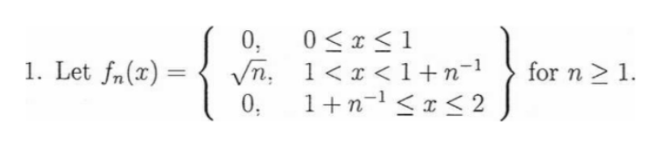

functional analysis is one of my favourite topics in mathematics.
at first it feels like linear algebra on steroids, which sounds super cool: spaces of functions, orthogonality between them, fancy inner products, different types of norms, etc.
I believe it is the one topic that has abstracted mathematics the most for me. I have been doing it for a fourier analysis class, where the professor wanted to set some brutal fundamentals, so he did a lot of functional analysis. using a ton of linear operators, which can be basically anything, makes it feel much more fundamental and abstract: we can use the old 3x3 matrices as linear maps, things like convolution, adjoints (big topic btw, forcing that inner product property is my main idea for most proofs), weird inner products that make things harder, etc.
it almost asks you to forget that you should be able to imagine things geometrically, because I mean, what do two vectors at a 90 degree angle have to do with an inner product between two functions, defined as some weighted integral of f times the complex conjugate of g, being 0, right?
(fundamentally it has a lot to do with it, but the picture no longer really resembles the objects.)
then there is convergence: , , uniform, pointwise, which is quite interesting as well. for pointwise, for example, I remember I was so happy when I understood it intuitively. one of my midterms has the following sentence as the only proof for pointwise convergence:
“as n tends to infinity, for any fixed x, we will “slide” past it, hence we have pointwise convergence to 0”
the function was this bump (screenshot at the end):
for it is always 0. for any fixed , eventually , so the bump has slid past it and from then on. every single point ends up at 0.
but it does not converge uniformly. the bump gets narrower, but also taller: . pointwise only cares about each x on its own, uniform asks the whole function to be close at once, and here there is always one spot that is very far away.
and the cute part is that the norms disagree too:
so in it converges to 0, but in it never gets close to 0. same sequence, different norm, different answer. picking a norm is basically picking what “close” means.

please go and study, and especially reason, about these things, it’s amazing